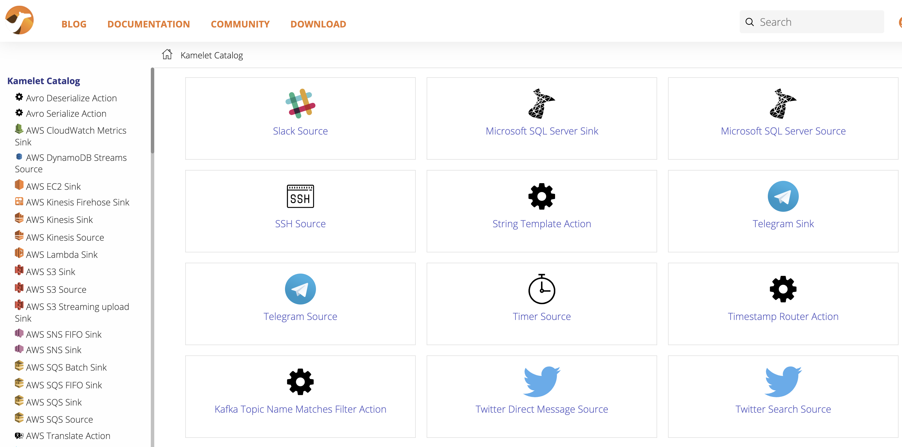

The latest community version of the Knative client v0.26 includes a new kn plugin for managing Kamelets as Knative event sources (GitHub: knative-sandbox/kamelet-plugin-source-kamelet). With the new plugin users of the kn tooling can directly list the available Kamelet sources and bind these Kamelets to Knative resources such as brokers, channels or services.
The Kamelets facilitate a whole new world of event source possibilities allowing users to connect to external services (AWS, Twitter, Telegram, Postgres) as part of Knative eventing.
Kamelets - what is this?
Kamelets (Kamel route snippets) introduce a new concept in Apache Camel that allows users to connect to external systems via a simplified ready-to-use connectors, hiding all the low level details about how those connections are implemented.
The user only provides a set of properties that the Kamelet needs for connecting to a foreign service (e.g. authorization token, target destination, connection credentials). The heavy lift of establishing the connection and exchanging data is done with the Camel components that run as part of the Kamelet runtime.
If you want to use Kamelets on your Kubernetes cluster simply install the Camel K operator (installation guide).
The user can then choose from a constantly growing Kamelet catalog that provides a great ensemble of ready-to-use Kamelets.
Kamelets catalog

Kamelets are able to act as an event source or sink and complement with Knative eventing and the Cloud events standard.
Install the kn Kamelet source plugin
Assuming you have the kn CLI tooling installed and ready on your machine you can simply load the Kamelet source plugin binaries in order to add the commands for managing Kamelets as event sources.
By default, the kn tooling knows a set of different event sources and its respective commands to manage those sources. You can display the command possibilities with the help option.
kn source -h
Manage event sources
Usage:
kn source SOURCE|COMMAND [options]
Aliases:
source, sources
Available Commands:
apiserver Manage Kubernetes api-server sources
binding Manage sink bindings
container Manage container sources
list List event sources
list-types List event source types
ping Manage ping sources
Use "kn <command> --help" for more information about a given command.
Use "kn options" for a list of global command-line options (applies to all commands).Now it is the time to load the Kamelet source plugin binary for your operating system from the plugin release pages.
Once you have the binary available on your machine you can hook this into your local kn tooling quite easily. The kn-client project provides a clever plugin architecture for adding commands. The respective plugin configuration is located in your home directory under ~/.config/kn/plugins.
Save the kn-source-kamelet binary into this configuration folder or add a symbolic link pointing to the plugin binary there. You can add the symbolic link as follows:
cd ~/.config/kn/plugins
ln -s /the/path/to/my/kn-source-kamelet kn-source-kameletYou can then verify the plugin setup by displaying the kn help page once more:
kn source -h
Manage event sources
Usage:
kn source SOURCE|COMMAND [options]
Aliases:
source, sources
Available Commands:
apiserver Manage Kubernetes api-server sources
binding Manage sink bindings
container Manage container sources
list List event sources
list-types List event source types
ping Manage ping sources
Plugins:
kamelet ~/.config/kn/plugins/kn-source-kamelet
Use "kn <command> --help" for more information about a given command.
Use "kn options" for a list of global command-line options (applies to all commands).You should see a new plugins section with the Kamelet source plugin listed. This means that you are now ready to use the plugin commands directly with the kn CLI.
List Kamelets
First thing you can do with the plugin is to list all available Kamelets. This will print a list of Kamelets coming from the Kamelet catalog that is installed on your cluster via the Camel K operator.
kn source kamelet list
NAME PHASE AGE CONDITIONS READY REASON
aws-ddb-streams-source Ready 2d7h 1 OK / 1 True
aws-kinesis-source Ready 2d7h 1 OK / 1 True
aws-s3-source Ready 2d7h 1 OK / 1 True
aws-sqs-source Ready 2d7h 1 OK / 1 True
azure-cosmosdb-source Ready 2d7h 1 OK / 1 True
azure-eventhubs-source Ready 2d7h 1 OK / 1 True
azure-storage-blob-source Ready 2d7h 1 OK / 1 True
azure-storage-queue-source Ready 2d7h 1 OK / 1 True
bitcoin-source Ready 2d7h 1 OK / 1 True
cassandra-source Ready 2d7h 1 OK / 1 True
chuck-norris-source Ready 2d7h 1 OK / 1 True
cron-source Ready 2d7h 1 OK / 1 True
dropbox-source Ready 2d7h 1 OK / 1 True
earthquake-source Ready 2d7h 1 OK / 1 True
elasticsearch-search-source Ready 2d7h 1 OK / 1 True
fhir-source Ready 2d7h 1 OK / 1 True
file-watch-source Ready 2d7h 1 OK / 1 True
ftp-source Ready 2d7h 1 OK / 1 True
ftps-source Ready 2d7h 1 OK / 1 True
github-source Ready 2d7h 1 OK / 1 True
google-calendar-source Ready 2d7h 1 OK / 1 True
google-mail-source Ready 2d7h 1 OK / 1 True
google-sheets-source Ready 2d7h 1 OK / 1 True
http-secured-source Ready 2d7h 1 OK / 1 True
http-source Ready 2d7h 1 OK / 1 True
...This command lists all Kamelets provided by the awesome Camel community. As you can see the list is huge and it is growing constantly. All these Kamelets are potential sources for your Knative eventing data streams.
Describe a Kamelet
You are able to display details for a Kamelet with the kamelet describe command:
kn source kamelet describe github-source
Name: github-source
Namespace: openshift-operators
Labels: camel.apache.org/kamelet.bundled=true,
camel.apache.org/kamelet.readonly=true, camel.apa ...
Annotations: camel.apache.org/catalog.version=0.4.0,
camel.apache.org/kamelet.group=GitHub, came ...
Age: 2d
Description: Github Source - Receive events From Github.
Provider: Apache Software Foundation
Support Level: Preview
Phase: Ready
Properties:
Name Req Type Description
oauthToken ✓ string Oauth token
repoName ✓ string The Github Repository name
repoOwner ✓ string The repository owner
type ✓ string The type of event to consume.
Conditions:
OK TYPE AGE REASON
++ Ready 2dThe command prints detailed information about the Kamelet source. In particular the properties that a user needs to set when using the Kamelet in a binding.
Create Kamelet bindings
A Kamelet is able to bind to a Knative resource such as a broker, a channel or a service. The binding will use the Kamelet as an event source and stream external data into Knative eventing.
You can use the kn client to create such a binding as the kn Kamelet source plugin provides a binding command with subcommands such as create and describe. See the following example that links the github-source Kamelet to a Knative channel.
kn source kamelet binding create github-pull-requests \
--kamelet github-source \
--channel github-prs \
--property oauthToken=xxx \
--property repoName=camel \
--property repoOwner=apache \
--property type=pullRequestIn the following each pull request on the given GitHub repository creates a new event on the channel github-prs.
You should now see the created binding when running the binding list command
kn source kamelet binding list
NAME PHASE AGE CONDITIONS READY REASON
github-pull-requests Ready 36s 1 OK / 1 TrueWrap up
This completes the capabilities with the new kn source plugin for managing Kamelets as event sources. Please stay tuned as this is only the beginning and there are many more plugin features yet to come! Please give it a try and tell us what you think!